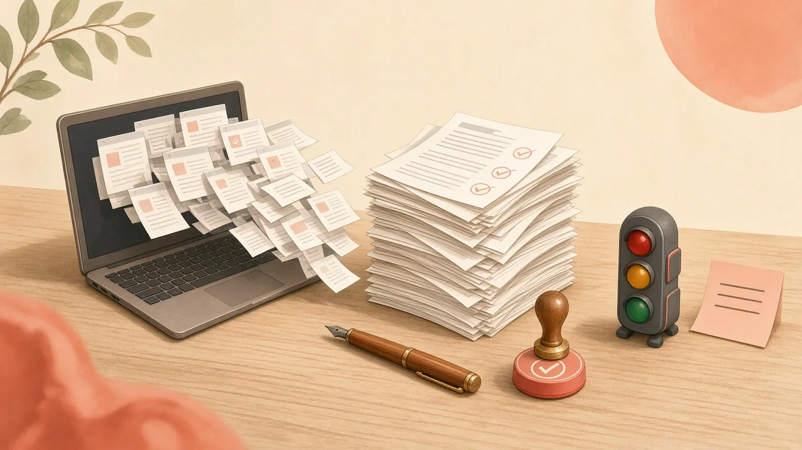

AI 沒有幫你少做決定，它只是把「做」變成了「審」
產出成本降到零，審核成本卻全落在你身上。主管真正要守住的，是判斷力的電量。

用了 AI 之後，你是不是覺得事情做得更快，人卻更累？
這週 X 上有一串討論，起點是一篇在 Hacker News 上被熱議的開發者文章，談的是「AI brain fry」，AI 腦疲勞。文章裡有一個對比很傳神：自己寫四個小時的程式，人會進入心流；同時在四個終端機分頁裡管四個 AI 代理，四個小時下來，腦袋像被炸過一樣。
我看到這段，第一個反應是：這不只是工程師的事。
每天用 AI 寫提案、整理會議紀錄、做分析的主管和資深工作者，都在經歷同一件事，只是沒有人幫它取名字。
不是工作變少，是工作搬家了
AI 沒有減少你的決策。它做的事情是，把「產出」的成本降到接近零，再把「評估與審核」的成本推到極限。
以前寫一份企劃，你花三天寫，寫的過程就在思考。現在 AI 三十秒給你一份，你要在幾分鐘內判斷：邏輯對嗎？架構完整嗎？有沒有漏掉邊界條件？要採用，還是重跑？
每一段生成，大腦都在背景做這些微決策。你可以把自己想成一個每秒鐘都要簽核十份企劃案的主管。單看每一份都不難，難的是它們一直來，而且沒有下班時間。
再加上跨專案、跨視窗的切換，前額葉的算力就這樣被一點一點榨乾。
同一串討論裡，還有人轉述人因研究的說法：連續監看大約 30 分鐘之後，人察覺異常的敏感度會明顯下滑。AI 的產出偏偏又長得很工整，越工整，越容易讓人放行。
所以問題從來不是 AI 夠不夠強。問題是，你的判斷力有沒有被當成一種有限的資源來管理。
超載不是腦袋一片空白才算
很多人要等到完全想不動了，才發現自己超載。其實在那之前，會先出現幾個訊號。
第一個，我叫它「預設通行」。你原本對品質很挑剔，某一刻突然覺得「算了，AI 寫這樣就這樣吧，先丟出去」。這不是效率變高，是你負責挑剔的那個機制已經沒電了，大腦改走阻力最小的路。
第二個，是在輸入框前面打轉。眼睛看著生成的文字，卻讀不進意思；同一個問題反覆改 prompt，卻說不出自己到底要什麼。
第三個，在身體上。肩膀不知不覺聳起來，下巴咬緊，呼吸變淺。
這三個訊號出現任何一個，就該停，而不是再開一個視窗。
把判斷前置，不要在對話裡即時花掉
既然瓶頸在「每一步都要決定要不要讓 AI 做、做得好不好」，解法就是把這些判斷提前做完、寫成規則，不要在每一次互動裡重新算一次。
第一步，先畫委派邊界。我會把工作按風險和可不可逆，分成三種燈號：
- 綠燈，全權放行：格式轉換、資料整理、初步潤稿、語法修正。規則是不逐字檢查，沒破圖、沒報錯就用。
- 黃燈，人機共創：策略發想、多面向分析、架構草擬。只跟 AI 對大綱和架構，不糾結字句；架構對了，一次收尾。
- 紅燈，AI 不進來：核心定位、不可逆的商業承諾、牽涉人際和直覺的決定。關掉視窗，拿白紙自己想。
規則先寫死，你就不用每件事都重新判斷一次該不該交出去。
第二步，從「聊天式審核」改成「先寫規格」。很多人的用法是邊走邊看，讓 AI 給靈感，再由人腦挑。這會製造大量沒有終點的審核。
改法很簡單：叫 AI 之前，先花三分鐘在便條紙上寫下三條不妥協的驗收標準。交出去之後，你的大腦只做一件事，比對。對得上就收工，對不上就重來。從「整體評估」變成「單純比對」，耗的電差很多。
第三步，批量審核。寫一段、等一段、審一段，等於一直在「下指令的人」和「驗收的人」兩個角色之間切換，這是最耗能的情境切換。比較好的節奏是：早上集中把規格和 prompt 理好，讓 AI 批量生成，下午挑一個固定時段集中驗收。
已經超載了，先斷電，再錨定節奏
如果今天已經燒乾了，先做兩件很物理的事。
合上筆電，拿一張 A4 白紙，把腦中懸著的待辦、還沒決定的專案，不分順序全部倒在紙上。讓工作記憶有地方放，它才會鬆開。
然後離開座位走 15 分鐘，不戴耳機、不看手機、不想下一步。讓大腦從「一直在執行」切回「放空」。
長期來說，我建議守住兩條線。
一條是每天的第一個 90 分鐘。精神最好的時候，不開 AI，也不開通訊軟體，只拿來想今天最關鍵的一兩件事，把最重要的決定先做完。
另一條是決策宵禁。訂一個時間，例如下午五點，之後原則上不再做「評估 AI 產出合不合適」這類工作，只做執行、收尾、歸檔。
把 AI 當成什麼樣的同事
我現在會把 AI 想成一個算力無窮、但完全不負責任的實習生。
它遞上來的每一份東西，看起來都很完整。如果你沒有先給它驗收清單、沒有先畫好它的工作邊界，那每一份報告都在合法地拿走你的精神能量。
邊界畫清楚，決策的主動權和清晰度才會回到你手上。
下一次打開 AI 之前，先問自己一句：這件事是綠燈、黃燈，還是紅燈？我的三條驗收標準寫好了嗎？